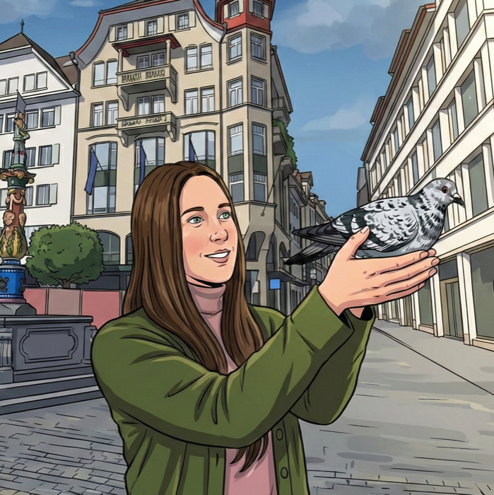

Petition an den Stadtrat und den Grossen Stadtrat.
Für ein nachhaltiges und tiergerechtes Stadttaubenmanagement in Luzern
Luzern braucht eine nachhaltige Lösung, die Mensch, Tier und Stadt gleichermassen gerecht wird.
Petition unterschreibenUnsere Forderung
Wir fordern ein nachhaltiges und tiergerechtes Stadttaubenmanagement.
Wir fordern die Stadt Luzern auf, ein nachhaltiges und tiergerechtes Stadttaubenmanagement nach dem Augsburger Modell einzuführen. Damit soll die Stadttaubenpopulation langfristig und tierschutzgerecht reguliert sowie Verschmutzungen und Nutzungskonflikte im öffentlichen und privaten Raum nachhaltig reduziert werden.
Petition unterschreiben ↑ Nach obenFür eilige Leserinnen und Leser
Das Stadttaubenproblem ist menschengemacht – und lösbar.
Die heutige Situation belastet gleichermassen Bevölkerung, Hauseigentümer:innen, Gewerbe und Stadttauben. Verschmutzungen, hohe Reinigungskosten und leidende Tiere sind keine unvermeidbaren Begleiterscheinungen des Stadtlebens, sondern die Folge eines mangelhaften Stadttaubenmanagements.
Stadttauben sind ein Produkt menschlicher Domestizierung mit angezüchtetem Brutzwang. Seit sie freigesetzt wurden oder aus menschlicher Haltung entkommen sind, sind sie gezwungen, als Heimatlose auf der Strasse zu leben.
Mit betreuten Taubenschlägen nach dem Augsburger Modell existiert seit vielen Jahren eine wissenschaftlich fundierte und praxiserprobte Lösung, welche Tierwohl, Sauberkeit und Wirtschaftlichkeit miteinander verbindet.
↑ Nach obenWarum braucht Luzern ein neues Stadttaubenmanagement?
Das Problem in zwei Minuten erklärt.
Erklärvideo folgt
Warum Stadttauben unsere Verantwortung sind
Keine Wildtiere. Keine Schädlinge. Heimatlose Haustiere.
Stadttauben sind Nachkommen domestizierter Haus- und Brieftauben. Über Jahrtausende an den Menschen angepasst, weisen sie Eigenschaften auf, die ein selbstständiges Leben in der Stadt erschweren: Sie sind äusserst standorttreu, brüten ganzjährig und nutzen Gebäude als Brutplätze. Stadttauben stellen kein höheres Gesundheitsrisiko dar als andere Vögel.
Als Körnerfresser finden sie in der Stadt kaum artgerechte Nahrung und ernähren sich aus Hunger von menschlichen Abfällen. Die Folgen sind Fehl- und Mangelernährung, Krankheiten und Verletzungen. Auf der ständigen Suche nach Nahrung halten sie sich häufig am Boden auf und verfangen sich mit den Füssen in Haaren, Schnüren und anderen fadenartigen Abfällen – oft mit schweren Verletzungen als Folge.
↑ Nach obenDie Ausgangslage
Luzern hat zwei Taubenschläge – doch ein nachhaltiges Stadttaubenmanagement fehlt.
In der Stadt leben nach Schätzungen der Behörden rund 2'000 bis 3'000 Stadttauben. Die beiden bestehenden Taubenschläge bieten lediglich Brutplätze für insgesamt rund 180 Paare und erreichen damit nur einen kleinen Teil der Population.
Entscheidend ist zudem: Eine artgerechte Fütterung findet in den Schlägen nicht statt. Damit fehlt ein zentraler Mechanismus, um die Tauben dauerhaft an die Schläge zu binden. Die Tiere suchen weiterhin im öffentlichen Raum nach Nahrung und brüten an Gebäuden, auf Balkonen und an anderen unkontrollierten Standorten.
Die Stadt Luzern vertritt den Standpunkt, dass im öffentlichen Raum genügend Nahrung für die Stadttauben vorhanden sei. Eine Verknappung des Nahrungsangebots senkt die Brutaktivität jedoch kaum, erhöht aber die Sterberate und Krankheitsanfälligkeit. Auch der bei Stadttauben häufig beobachtete flüssige sogenannte «Hungerkot» steht im Zusammenhang mit Mangelernährung.
Zwei Taubenschläge allein sind noch kein Stadttaubenmanagement. Ohne ein aufeinander abgestimmtes Gesamtkonzept bleiben Verschmutzung, unkontrollierte Brut und Tierleid bestehen.
↑ Nach obenStadttauben in Luzern
Die bestehenden Taubenschläge erreichen nur einen kleinen Teil der Population.
ca. 2'500
Stadttauben leben schätzungsweise in Luzern
180
Brutpaare finden Platz in den zwei städtischen Taubenschlägen
Ein nachhaltiges Stadttaubenmanagement
Betreute Taubenschläge statt Symptombekämpfung.
Ein nachhaltiges Stadttaubenmanagement nach dem Augsburger Modell basiert auf mehreren aufeinander abgestimmten Massnahmen.
01
Betreute Taubenschläge
Einrichtung betreuter Taubenschläge an geeigneten Hotspots.
02
Artgerechte Versorgung
Artgerechte Fütterung sowie Wasser- und medizinische Grundversorgung.
03
Geburtenkontrolle
Nachhaltige Regulierung der Population durch konsequenten Eiertausch.
04
Wilde Brutplätze reduzieren
Tiergerechtes Verschliessen ungeeigneter und unkontrollierter Brutplätze.
05
Aufklärung und Lenkung
Gezielte Aufklärung der Bevölkerung sowie – wo erforderlich – Fütterungsverbote ausserhalb der Schläge.
Dadurch wird ein grosser Teil der Tauben dauerhaft an die betreuten Schläge gebunden. Der Grossteil des Kots fällt dort an und kann fachgerecht entsorgt werden.
Ziel: Ein sauberes, konfliktarmes und tiergerechtes Zusammenleben von Bevölkerung und Stadttauben.
Tötungen sind keine nachhaltige Lösung.
Auch das Töten von Stadttauben ist keine nachhaltige Lösung. Wissenschaftlich ist gut belegt, dass sich dezimierte Bestände durch Zuzug und frei werdende Ressourcen rasch wieder erholen. Tötungsmassnahmen bekämpfen deshalb lediglich die Symptome – nicht die Ursachen des Stadttaubenproblems.
Vorteile
Ein betreutes Stadttaubenmanagement nützt Mensch, Tier und Stadt.
Sauberkeit
Weniger Verschmutzungen an Fassaden, Balkonen, Dächern und im öffentlichen Raum.
Der Grossteil des Taubenkots fällt im betreuten Schlag an und kann dort entfernt werden.
Wirtschaft
Weniger Kosten für Reinigung, Unterhalt und Vergrämungsmassnahmen.
Langfristig wirtschaftlicher als kurzfristige Symptombekämpfung.
Tierwohl
Nachhaltige und tierschutzgerechte Bestandesregulierung durch Eiertausch.
Weniger Hunger, Fehl- und Mangelernährung sowie frühzeitige Betreuung verletzter Tiere.
Vorbildfunktion
Luzern setzt auf eine moderne, wissenschaftlich fundierte Lösung.
Eine Lösung, die Bevölkerung, Gewerbe, Stadtbild und Tierschutz zusammenbringt.
Häufige Fragen
Noch Fragen?
Übertragen Tauben Krankheiten auf den Menschen?
Für die Allgemeinbevölkerung stellen Stadttauben kein höheres Gesundheitsrisiko dar als andere Vögel. Eine Übertragung von Krankheitserregern auf den Menschen ist zwar grundsätzlich möglich, kommt jedoch nur sehr selten vor. Ein hygienischer Umgang mit Ausscheidungen und kranken Tieren ist dennoch wichtig.
Führt das Füttern nicht zu noch mehr Tauben?
Nicht im Rahmen eines betreuten Stadttaubenmanagements. Die artgerechte Fütterung dient dazu, die Tauben dauerhaft an die betreuten Schläge zu binden. Dort werden die gelegten Eier konsequent durch Attrappen ersetzt und die Population gezielt reguliert. Fütterung und Geburtenkontrolle müssen deshalb gemeinsam umgesetzt werden.
Warum macht ein reines Fütterungsverbot keinen Sinn?
Stadttauben brüten aufgrund ihrer Domestikation auch bei knappem Nahrungsangebot weiter. Ein reines Fütterungsverbot führt deshalb nicht automatisch zu einer nachhaltigen Verringerung der Population. Stattdessen verstärkt es Hunger und Mangelernährung und erschwert die gezielte Bindung der Tiere an betreute Taubenschläge.
Was bringt ein betreuter Taubenschlag der Bevölkerung?
Werden Tauben an betreute Schläge gebunden, verbringen sie einen grossen Teil des Tages dort. Dadurch fällt auch ein grosser Teil des Kots im Taubenschlag an und kann fachgerecht entfernt werden. Verschmutzungen, wilde Brutplätze und Nutzungskonflikte im öffentlichen und privaten Raum können so nachhaltig reduziert werden.
Wie wird die Anzahl der Tauben verringert?
In den betreuten Taubenschlägen werden die gelegten Eier regelmässig kontrolliert und durch Attrappen ersetzt. Dadurch können die Tauben ihr natürliches Brutverhalten ausleben, ohne dass Jungtiere schlüpfen. Die Population wird auf diese Weise langfristig und tierschutzgerecht reguliert.
Luzern hat bereits zwei Taubenschläge – warum reichen diese nicht?
In Luzern leben nach Schätzungen der Behörden rund 2'000 bis 3'000 Stadttauben. Die beiden bestehenden Taubenschläge bieten Brutplätze für lediglich rund 180 Paare und erreichen damit nur einen kleinen Teil der Population. Zudem findet dort keine reguläre artgerechte Fütterung statt, wodurch ein zentraler Mechanismus zur dauerhaften Bindung der Tauben fehlt.
GEMEINSAM FÜR LUZERNS STADTTAUBEN
Du möchtest unsere Petition öffentlich unterstützen?
Wir suchen Organisationen und Persönlichkeiten aus Politik, Wissenschaft, Kultur, Gesellschaft, Wirtschaft und Tierschutz, die sich ideell hinter unser Anliegen stellen und ein tiergerechtes und nachhaltiges Stadttaubenmanagement in Luzern befürworten.
Petition öffentlich unterstützenJetzt mitmachen
Gib den Luzerner Stadttauben deine Stimme.
Unterstütze unsere Petition für ein nachhaltiges und tiergerechtes Stadttaubenmanagement in Luzern.
Petition unterschreiben ↑ Nach obenSEKTION LUZERN
Wer wir sind
Wir sind die Sektion Luzern von Stadttauben Schweiz. Seit unserer Gründung im Jahr 2025 engagieren wir uns für einen tiergerechten und nachhaltigen Umgang mit Stadttauben. Mit Aufklärungsarbeit und politischem Engagement setzen wir uns für ein zeitgemässes Stadttaubenmanagement in Luzern ein.
Livia